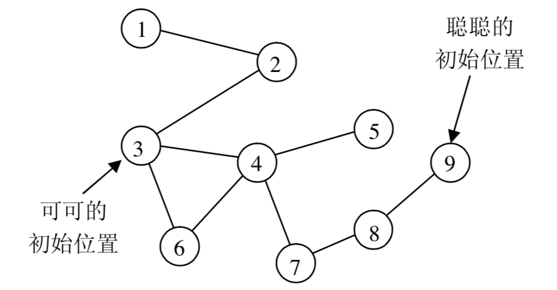

在一个魔法森林里，住着一只聪明的小猫聪聪和一只可爱的小老鼠可可。虽然灰姑娘非常喜欢她们俩，但是，聪聪终究是一只猫，而可可终究是一只老鼠，同样不变的是，聪聪成天想着要吃掉可可。
一天，聪聪意外得到了一台非常有用的机器，据说是叫GPS，对可可能准确的定位。有了这台机器，聪聪要吃可可就易如反掌了。于是，聪聪准备马上出发，去找可可。而可怜的可可还不知道大难即将临头，仍在森林里无忧无虑的玩耍。小兔子乖乖听到这件事，马上向灰姑娘报告。灰姑娘决定尽快阻止聪聪，拯救可可，可她不知道还有没有足够的时间。
整个森林可以认为是一个无向图，图中有$N$个美丽的景点，景点从$1$至$N$编号。小动物们都只在景点休息、玩耍。在景点之间有一些路连接。
当聪聪得到GPS时，可可正在景点$M(M≤N)$处。以后的每个时间单位，可可都会选择去相邻的景点（可能有多个）中的一个或停留在原景点不动。而去这些地方所发生的概率是相等的。假设有P个景点与景点M相邻，它们分别是景点R、景点S，......景点Q，在时刻$T$可可处在景点M，则在($T+1$)时刻，可可有$\frac{1}{P+1}$的可能在景点R，有$\frac{1}{P+1}$的可能在景点S，......，有$\frac{1}{P+1}$的可能在景点Q，还有$\frac{1}{P+1}$的可能停在景点M。
我们知道，聪聪是很聪明的，所以，当她在景点C时，她会选一个更靠近可可的景点，如果这样的景点有多个，她会选一个标号最小的景点。由于聪聪太想吃掉可可了，如果走完第一步以后仍然没吃到可可，她还可以在本段时间内再向可可走近一步。
在每个时间单位，假设聪聪先走，可可后走。在某一时刻，若聪聪和可可位于同一个景点，则可怜的可可就被吃掉了。
灰姑娘想知道，平均情况下，聪聪几步就可能吃到可可。而你需要帮助灰姑娘尽快的找到答案。
数据的第1行为两个整数$N$和$E$，以空格分隔，分别表示森林中的景点数和连接相邻景点的路的条数。
第2行包含两个整数$C$和$M$，以空格分隔，分别表示初始时聪聪和可可所在的景点的编号。
接下来$E$行，每行两个整数，第$i+2$行的两个整数$A_i$和$B_i$表示景点$A_i$和景点$B_i$之间有一条路。
所有的路都是无向的，即：如果能从A走到B，就可以从B走到A。
输入保证任何两个景点之间不会有多于一条路直接相连，且聪聪和可可之间必有路直接或间接的相连。
输出1个实数，四舍五入保留三位小数，表示平均多少个时间单位后聪聪会把可可吃掉。
4 3 1 4 1 2 2 3 3 4
1.500
9 9 9 3 1 2 2 3 3 4 4 5 3 6 4 6 4 7 7 8 8 9
2.167
【样例1说明】
开始时，聪聪和可可分别在景点1和景点4。
第一个时刻，聪聪先走，她向更靠近可可（景点4）的景点走动，走到景点2，然后走到景点3；假定忽略走路所花时间。
可可后走，有两种可能：第一种是走到景点3，这样聪聪和可可到达同一个景点，可可被吃掉，步数为1，概率为$\frac{1}{2}$。
第二种是停在景点4，不被吃掉。概率为$\frac{1}{2}$。
到第二个时刻，聪聪向更靠近可可（景点4）的景点走动，只需要走一步即和可可在同一景点。因此这种情况下聪聪会在两步吃掉可可。
所以平均的步数是$1*\frac{1}{2}+2*\frac{1}{2}=1.5$步。
【样例2说明】
森林如下图所示：

【数据范围】
对于所有的数据，$1≤N,E≤1000$。
对于50%的数据，$1≤N≤50$。
 Comet OJ
Comet OJ